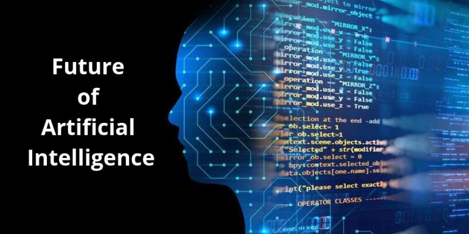

Introduction Of Artificial Intelligence:-
Artificial intelligence (AI) is currently one of the hottest buzzwords in tech and with good reason. The last few years have seen several innovations and advancements that have previously been solely in the realm of science fiction slowly transform into reality. Artificial intelligence (AI) is the ability of machines to replicate or enhance human intellect, such as reasoning and learning from experience. Artificial intelligence has been used in computer programs for years, but it is now applied to many other products and services. For example, some digital cameras can determine what objects are present in an image using artificial intelligence software. In addition, experts predict many more innovative uses for artificial intelligence in the future, including smart electric grids.
-: History Of AI :-
AI was a term first coined at Dartmouth College in 1956. Cognitive scientist Marvin Minsky was optimistic about the technology's future. The 1974-1980 saw government funding in the field drop, a period known as "AI winter", when several criticised progress in the field. Artificial intelligence is the ability of machines to perform certain tasks, which need the intelligence showcased by humans and animals. This definition is often ascribed to Marvin Minsky and John McCarthy from the 1950s, who were also known as the fathers of the field.
| YEAR | DISCRPTION |
|---|---|
| 1956 | John McCarthy coined the term ‘artificial intelligence’ and had the first AI conference. |
| 1969 | Shakey was the first general-purpose mobile robot built. It is now able to do things with a purpose vs. just a list of instructions. |
| 1997 | Supercomputer ‘Deep Blue’ was designed, and it defeated the world champion chess player in a match. It was a massive milestone by IBM to create this large computer. |
| 2002 | The first commercially successful robotic vacuum cleaner was created. |
| 2005-2019 | Today, we have speech recognition, robotic process automation (RPA), a dancing robot, smart homes, and other innovations make their debut. |
| 2020 | Baidu releases the LinearFold AI algorithm to medical and scientific and medical teams developing a vaccine during the early stages of the SARS-CoV-2 (COVID-19) pandemic. The algorithm can predict the RNA sequence of the virus in only 27 seconds, which is 120 times faster than other methods. |
What Is Artificial Intelligence(AI)...?
Artificial intelligence is the simulation of human intelligence processes by machines, especially computer systems. Specific applications of AI include expert systems, natural language processing, speech recognition and machine vision. " It is the science and engineering of making intelligent machines, especially intelligent computer programs. It is related to the similar task of using computers to understand human intelligence, but AI does not have to confine itself to methods that are biologically observable." The term may also be applied to any machine that exhibits traits associated with a human mind such as learning and problem-solving. AI is also defined as:-
- An Intelligent Entity Created By humans.
- Capable of Performing Tasks intelligently without being explicitly instructed.
- Capable of thinking and acting rationally and humanely.
A layman with a fleeting understanding of technology would link it to robots. They’d say Artificial Intelligence is a terminator like-figure that can act and think on its own.
AI is an interdisciplinary science with multiple approaches, but advancements in machine learning and deep learning are creating a paradigm shift in virtually every sector of the tech industry.
Artificial intelligence allows machines to model, and even improve upon, the capabilities of the human mind. From the development of self-driving cars to the proliferation of smart assistants like Siri and Alexa, AI is a growing part of everyday life. As a result, many tech companies across various industries are investing in artificially intelligent technologies.

Advantages & Dis-Advantages Of Artificial Intelligence(AI).
Artificial neural networks and deep learning artificial intelligence technologies are quickly evolving, primarily because AI processes large amounts of data much faster and makes predictions more accurately than humanly possible.
AI applications that use machine learning can take that data and quickly turn it into actionable information. As of this writing, the primary disadvantage of using AI is that it is expensive to process the large amounts of data that AI programming requires.
Advantages:-
- Good at detail-oriented jobs.
- Reduced time for data-heavy tasks.
- Delivers consistent results.
- AI-powered virtual agents are always available.
Dis-Advantages:-
- Expensive.
- Requires deep technical expertise.
- Limited supply of qualified workers to build AI tools.
- Lack of ability to generalize from one task to another.
Future Of Artificial Intelligence(AI)
When one considers the computational costs and the technical data infrastructure running behind artificial intelligence, actually executing on AI is a complex and costly business. Undoubtedly, Artificial Intelligence (AI) is a revolutionary field of computer science, which is ready to become the main component of various emerging technologies like big data, robotics, and IoT. It will continue to act as a technological innovator in the coming years. In just a few years, AI has become a reality from fantasy.
This world has seen four major revolutions that changed its entire face. The first revolution was in 1784 when the first steam engine was introduced. In 1870, the second revolution, electricity was invented. The third one was in 1969 when the word information technology was introduced in the world. And the fourth one is the revolution of Artificial Intelligence which we are experiencing right now. The Future of AI holds more inventions that will bring us closer to an unparalleled future.
Major Feilds Of Artificial intelligence(AI) In Future
- Health Care Industries
- AI in Education
- AI in Finance
- AI in Military and Cyber-Security
1. Health Care Industries:-
India is 17.7% of the worlds’ population that makes it the second-largest country in terms of China’s population. Health care facilities are not available to all individuals living in the country. AI has the ability to provide the facility to detect disease based on symptoms; even if you don’t go to the doctor, AI would read the data from Fitness band/medical history of an individual to analyze the pattern and suggest proper medication and even deliver it on one’s fingertips just through cell-phone.
2. AI In Education:-
The development of a country depends on the quality of education youth is getting. Right now, we can see there are lots of courses are available on AI. But in the future AI is going to transform the classical way of education. The education system could be quite effective and can be according to the individual’s personality and ability. It would give chance brighter students to shine and to imbecile a better way to cop up.
3. AI In Finance:-
AI has enormous scope in almost every field, it has great potential to boost individuals’ economic health and a nation. Nowadays, the AI algorithm is being used in managing equity funds. An AI system could take a lot number of parameters while figuring out the best way to manage funds. AI-driven strategies in the field of finance are going to change the classical way of trading and investing. it could be devastating for some fund managing firms who cannot afford such facilities and could affect business on a large scale, as the decision would be quick and abrupt.
4. AI In Military and Cyber-Security:-
AI-assisted Military technologies have built autonomous weapon systems, which won’t need humans at all hence building the safest way to enhance the security of a nation. We could see robot Military in the near future, which is as intelligent as a soldier/ commando and will be able to perform some tasks. The Concerning part with AI-assisted system is that how it performs algorithm is not quite explainable. The deep neural networks learn faster and continuously keep learning the main problem here would be explainable AI.
4 Types Of Artificial Intelligence(AI)
- Reactive Machines.
- Limited Memory.
- Theory Of Mind.
- Self-Aware.
1. Reactive Machines:-
When categorizing different types of artificial intelligence, the story of the technology’s evolution unfolds. Reactive machines are just that — reactionary. “Reactive Machines perform basic operations,” said Rogenmoser. “They cannot improve their functionality through experience, and can only respond to a limited combination of inputs.” Reactive Machines perform basic operations. This level of A.I. is the simplest. These types react to some input with some output. There is no learning that occurs. This is the first stage to any A.I. system.
2. Limited Memory:-
The next step in AI’s evolution is developing a capacity for storing knowledge. Limited memory types refer to an A.I.’s ability to store previous data and/or predictions, using that data to make better predictions. With Limited Memory, machine learning architecture becomes a little more complex. Every machine learning model requires limited memory to be created, but the model can get deployed as a reactive machine type.
Limited Memory A.I. works in two ways:
1. A team continuously trains a model on new data.
2. The A.I. environment is built in a way where models are automatically trained and renewed upon model usage and behavior.
Limited memory AI can be applied in a broad range of scenarios, from smaller scale applications such as chatbots, to self-driving cars and other advanced use cases. “When an image is scanned by such an AI, it uses the training images as references to understand the contents of the image presented to it, and based on its ‘learning experience’ it labels new images with increasing accuracy,”
3. Theory Of Mind.
We have yet to reach Theory of Mind artificial intelligence types. These are only in their beginning phases and can be seen in things like self-driving cars. In this type of A.I., A.I. begins to interact with the thoughts and emotions of humans. “Current models have a one-way relationship,” said Rogenmoser. “AI [tools] like Alexa and Siri don’t react with any emotional support when you yell at them.”
This concept is referred to as “theory of mind,” a term borrowed from psychology that describes humans’ ability to read the emotions of others and predict future actions based on that information. Theory of mind could bring plenty of positive changes to the tech world, but it also poses its own risks. Since emotional cues are so nuanced, it would take a long time for AI machines to perfect reading them, and could potentially make big errors while in the learning stage.
4. Self-Aware.
The stage beyond theory of mind, when artificial intelligence develops self awareness, is referred to as the AI point of singularity. It becomes self-aware. This kind of A.I. exists only in story, and, as stories often do, instills both immense amounts of hope and fear into audiences. Robot armies, mechanical overlords, sentient humanoids — there’s no divorcing public perception of AI from its sci-fi reputation.
Steps are being taken by researchers and engineers to develop rudimentary versions of self-aware AI. Perhaps one of the most famous of these is Sophia, a robot developed by Hong Kong-based robotics company Hanson Robotics. A self-aware intelligence beyond the human has an independent intelligence, and likely, people will have to negotiate terms with the entity it created. “AI is going to become much better at solving real use cases, but I want to express that I don’t think this [means] the end of humans and the end of work”
Other 3 Types Of AI.
They follow a similar outline but get written about with a stronger foundation in what the A.I. is used for, what it is capable of, and how it helps advance humanity. These three types are:
- Artificial Narrow Intelligence.
- Artificial General Intelligence.
- Artificial Super Intelligence.
A.I. is a strong software tool for the future that’s here to stay. A.I. is eliminating repetitive tasks in the workforce and elevating humans to reach higher selves, embracing constant states of change and creativity.